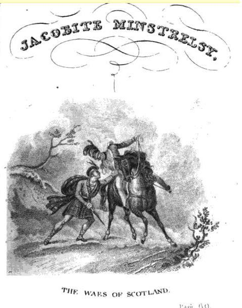

The Waes of Scotland
Les malheurs de l'Ecosse
by Allan Cunningham
Tune - Mélodie"The Siller Crown"
from Hogg's "Jacobite Reliques" , vol I, N° 78, 1819
Sequenced by Christian Souchon

|
A variant of this tune was published as an Irish air by S. O'Neil in "Music of Ireland: 1850 Melodies" in 1903 (N°280, P.49):
Variant ("An coroin airgeadeac" = The Silver Crown) Source "The Fiddler's Companion" (cf. Links). |
Une variante de cette mélodie a été publiée en tant qu'air irlandais par S. O'Neil dans "Music of Ireland: 1850 Mélodies" en 1903 (N°280, P.49):
Variant ("An coroin airgeadeac" = La couronne d'argent) Source "The Fiddler's Companion" (cf. liens). |

|
THE WAES OF SCOTLAND.
1. When I left thee, bonny Scotland, O thou wert fair to see! Fresh as a bonny bride in the morn, When she maun wedded be. When I came back to thee Scotland, Upon a May morn fair, A bonny lass sat at our town end, Kaming her yellow hair. 2. ' Oh hey ! oh hey!' sung the bonny lass, ' Oh hey! and wae is me ! There's siccan sorrow in Scotland, As een did never see. Oh hey! oh hey! for my father auld! Oh hey! for my mither dear! And my heart will burst for the bonny lad Wha left me lanesome here.' 3. I had gane in my ain Scotland Mae miles than twa or three, When I saw the head o' my ain father Coming up the gate to me. ' A traitor's head !' and ' a traitor's head!' Loud bawl'd a bloody loon; But I drew frae the sheath my glave o' weir, And strack the reaver down. 4. I hied me hame to my father's ha', My dear auld mither to see; But she lay 'mang the black eizels, Wi' the death-tear in her e'e. ' O wha has wrought this bloody wark? Had I the reaver here, I'd wash his sark in his ain heart's blood, And gie't to his dame to wear.' 5. I hadna gane frae my ain dear hame But twa short miles and three, Till up came a captain o' the Whigs Says, ' Traitor, bide ye me!' I grippit him by the belt sae braid, It birsted i' my hand, But I threw him frae his weir-saddle, And drew my burlie brand. 6. ' Shaw mercy on me !' quo' the loon, And low he knelt on knee : But by his thigh was my father's glaive Whilk gude King Bruce did gie; And buckled round him was the broider'd belt Whilk my mither's hands did weave. My tears they mingled wi' his heart's blood, And reek'd upon my glaive. 7. I wander a' night 'mang the lands I own'd, When a' folk are asleep, And I lie o'er my father and mither's grave An hour or twa to weep. O, fatherless and mitherless, Without a ha' or hame, I maun wander through dear Scotland, And bide a traitor's blame. Source: Jacobite Minstrelsy, published in Glasgow by R. Griffin & Cie and Robert Malcolm, printer in 1828. |
LES MALHEURS DE L'ECOSSE
1. Tu étais, le jour où je t'ai quittée, Resplendissante, mon Ecosse! On aurait dit quelque jeune mariée Le matin de ses noces. Un beau matin de mai quand vers toi je revins Après de longues aventures Une jeune fille sur le bord du chemin Peignait sa blonde chevelure. 2. "Hélas, hélas" chantait la belle enfant, "Hélas, hélas, que j'ai de peine! Il règne sur l'Ecosse un ouragan De malheur et de haine. Hélas, mon pauvre père que l'on a tué! Hélas, hélas ma pauvre mère! Je pleure en pensant à mon gentil fiancé Qui me laissa seule naguère." 3. Dans ma belle Ecosse, quand j'eus des lieues Et des lieues marché sur les routes, La tête de mon père au bout d'un pieu Venait à ma rencontre. "C'est la tête d'un traître, ce glorieux trophée" Hurlait la brute sanguinaire. Sitôt que du fourreau, mon sabre j'ai tiré. Le monstre vil gisait à terre." 4. Je me hâtai d'entrer dans la maison Craignant pour ma mère, livide, Elle gisait au milieu des brandons Les yeux encore humides. "Où se cache l'auteur de ces odieux forfaits? Si je pouvais saisir ce traître, Dans son sang sa chemise je voudrais laver. Que sa femme puisse la mettre!". 5. Alors que je n'étais pas éloigné Que plus de trois lieues de ma ferme, Un capitaine de Whigs ma route a croisé. "Halte-là, maudit traître!" Et je l'ai saisi par son large ceinturon Qui vint à rompre sous ma poigne. Je parviens à lui faire vider les arçons Et mon claymore je dégaine. 6. Le gredin s'écrie "Ne sois pas cruel!" Et le voilà qui s'agenouille. Mais il porte le glaive paternel, Un cadeau du roi Bruce. Et autour de la taille le traître portait La bande tissée par ma mère. Le sang de son cœur à mes pleurs vint se mêler Lorsqu'il a jailli sur mon glaive. 7. Revenu la nuit à travers les champs, Lorsque tous dormaient sur leurs couches, J'ai creusé la tombe de mes parents Versant des larmes farouches. Me voilà donc de père et de mère orphelin, Sans pierre où poser ma tête; Et dans ma chère Ecosse à l'errance contraint: On m'y désigne comme un traître. (Trad. Christian Souchon(c)2009) |
|
* This song is evidently modern, but the subject relates to the early Jacobite Times, and is beautifully handled. It is believed to be a production of that delightful master of the Scottish Lyre, Allan Cunningham. The air is the well-known one of the Siller Crown.
Note by Hogg in "Jacobite Relics" |
"A l'évidence ce chant est moderne mais le sujet a trait à la première époque du Jacobitisme et le texte est bien tourné. Il y a tout lieu de croire qu'on le doit à la plume élégante d'Allan Cunningham. L'air est celui bien connu de "la Couronne d'argent".
Note de Hogg dans ses "Reliques Jacobites" |
|
|
|